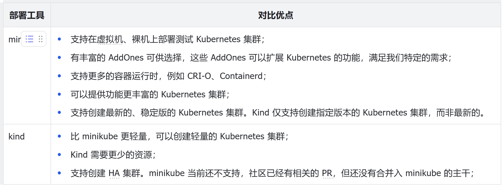

本地部署 K8s 集群
local-up-cluster.sh
如果你对 Kubernetes 源码不熟悉，可能你从来没听过此种部署方式。hack/local-up-cluster.sh 是 Kubernetes 源码仓库中的一个脚本，用于在本地快速启动一个单节点的 Kubernetes 集群。这个脚本通常用于开发、测试和调试目的。
如果你是一名 Kubernetes 源码贡献者，可能需要经常需要使用 hack/local-up-cluster.sh脚本来启动一个测试集群，测试 Kubernetes 集群行为是否符合预期，因为 hack/local-up-cluster 脚本可以基于当前仓库中的代码（master 分支，或者当前项目中的源码）启动一个测试 Kubernetes 集群。
企业社区提供的 Kubernetes 部署工具，基本都是基于正式的 release 版本来创建 Kubernetes 集群的。
Premise（前提）
- Install Docker
- Install kubectl
本地部署K8s集群有多种不同的方式：
kind
本地镜像加载到 kind 集群中
kind load docker-image docker.io/bitnami/redis:6.2.16-debian-12-r1
minikube
Minikube 是一个 Kubernetes SIG 项目，用来在 macos、linux、windows 上快速部署本地的 kubernetes 集群。因为 minikube 可以很方便的快速部署一个 kubernetes 集群，所以很适合用来创建开发、测试用的 kubernetes 集群。
minikube 的核心特性如下：
- 支持最新的 Kubernetes 版本；
- 跨平台，支持 Linux，macOS，Windows；
- 支持以虚拟机、容器或裸金属的方式部署 Kubernetes 集群；
- 支持 CRI-O，containerd，docker 容器运行时；
- 支持一些高级功能，如负载均衡器、文件系统挂载、FeatureGates 和网络策略；
- minikube 以 AddOn 的方式，支持很多应用插件，例如：efk、gvisor、istio、kubevirt、registry、ingress 等；
- 支持常用的 CI 环境，例如：Travis CI、Github、CircleCI、Gitlab 等。
提示：
- 虚拟机方式：通过 kvm 或 virtualbox 等虚拟机管理器，在本地创建若干个虚拟机，然后在虚拟机中部署 Kubernetes 组件；
- 容器方式：在本地创建一个容器，然后在容器中部署 Kubernetes 组件。
minikube 当前仍处在活跃的更新阶段，更多关于 minikube 的介绍可阅读其官方文档：https://minikube.sigs.k8s.io/docs/
kubeadm
Kubeadm 是 Kubernetes 官方提供的一个工具，用来便捷的创建生产级可用 Kubernetes 集群。Kubeadm 提供了一种简单快捷的方式，来创建一个最小可行的、安全的 Kubernetes 集群。Kubeadm 是一个运行在当前节点的工具，旨在成为一个集群部署的基础工具，其他集群部署工具可以集成 kubeadm，以完成更加复杂、更加定制化的集群部署。
常用的 kubeadm 命令如下：
- kubeadm init：初始的 Kubernetes 控制面节点；
- kubeadm join：将控制面组件或工作节点添加到已有的 Kubernetes 集群中；
- kubeadm upgrade：升级 Kubernetes 到指定的版本；
- kubeadm reset：撤销 kubeadm init 或 kubeadm join 对机器做的所有更改。
使用 kubeadm 部署 kubernetes v1.25.3
二进制部署
二进制部署，就是直接基于 Kubernetes 官方提供的发布版的二进制文件（例如 v1.29.2 版本 Kubernetes 二进制文件）进行部署。在部署过程中，需要下载这些二进制文件，并根据集群配置创建 Systemd Unit 文件，创建完成后，按照预定的顺序启动 Systemd 服务，完成 Kubernetes 集群的部署。
二进制部署是最复杂、开发工作量最大的部署方式，一般只有在大公司、大团队，或者对部署集群有特殊需求的团队中才会采用这种方式来部署。早期社区没有太多 Kubernetes 集群部署工具，很多团队，都采用这种方式来部署集群。但是，随着社区 Kubernetes 部署工具的成熟，例如：kubeadm、cluster-api 等，这些团队逐渐的放弃了原始的二进制部署方式，而改为基于 kubeadm 或 cluster-api 来部署。
Minikube VS Kind
minikube 和 kind 都是 kubernetes 的官方项目，并且都可以快速创建一个开发、测试用的 kubernetes 集群，二者当前也都处在活跃的更新迭代阶段。
二者的对比优缺点总结如下：

二者不是一个替代与被替代的关系，如果你对创建 kubernetes 没有特别的需求，并且 minikube 选择 Docker 驱动时，二者其实没有太多区别。但如果你一定想选择一个最合适的，那么你可以通过二者的对比优点，来自行选择。
如果你只想快速部署一个测试用的 Kubernetes 集群，没有其他特别需求，例如：期望在虚拟机上部署、期望集群中部署一些插件（例如：efk、gvisor、istio、kubevirt、registry、ingress）以增强集群的功能，那么 kind 是一个好的选择，因为其足够轻量。如果你想创建一个 HA 集群，当前只能选择 kind，因为 minikube 暂时还不支持。
如果你想创建一个稍微复杂点的测试集群，并且期望能对集群做更多的管控，可以使用 minikube 来创建。
如何选择
本地开发推荐使用 local-up-cluster.sh 脚本，测试环境可以使用kind或者minikube，生产环境推荐使用 kubeadm。